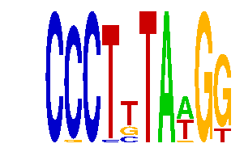

family_13 |
|---|
|  |
| Download PWM |
| Download instances (motifs) |
| Show motif distribution |
Query_ID | Query_Consensus | Subject_Name | Source_DB | Subject_ID | Length | Orientation | Offset | Divergence | Overlap | Subject_Consensus |
|---|
Sequence | Start_position (from start) | Start_position (from end) | Average conservation | Best conservation score | Instance_with_best_CS | Best_Z-score | Instance_with_best_ZS | Strand |
|---|---|---|---|---|---|---|---|---|
| chr13:45580733-45582815 | 64 | 74 | 0.0167 | 0.033 | CCCTYTAWGG | 12.722019 | CCCTYTAWGG | -1 |
| chr9:67095100-67096114 | 308 | 318 | 0.0005 | 0.001 | CCCTKTAAGK | 16.888361 | CCCYTTAWGG | 1 |
| chr8:13249200-13250600 | 780 | 790 | 0.5341 | 0.592 | CCCTKTAAGK | 15.956857 | CCCTKTAWGG | -1 |
| chr17:81868000-81869563 | 697 | 707 | 0.0014 | 0.002 | CCCTKTAAGK | 14.1042595 | CCCTKTAAGK | -1 |
| chr10:6924700-6926457 | 14 | 24 | 0.0415 | 0.046 | CCCTKTAWGG | 14.1042595 | CCCTKTAAGK | 1 |
| chr12:74966100-74967339 | 301 | 311 | 0.0001 | 0.001 | CCCTKTAAGK | 15.956857 | CCCTKTAWGG | 1 |
| chr8:46985026-46987900 | 1528 | 1538 | 0.0033 | 0.01 | CCCTYTAWGG | 14.1042595 | CCCTKTAAGK | 1 |
| chr2:49926100-49928200 | 2068 | 2078 | 0.0104 | 0.03 | CCCTYTAWGG | 14.437937 | CCCTTTANGG | 1 |
| chr14:55583700-55589300 | 4180 | 4190 | 0.07 | 0.276 | CCCTYTAWGG | 14.437937 | CCCTTTANGG | 1 |
| chr9:66881000-66882300 | 460 | 470 | 0.0003 | 0.001 | CCCTTTANGG | 14.437937 | CCCTTTANGG | 1 |
| chr1:43293900-43297200 | 1201 | 1211 | NA | NA | CCCTTTANGG | 14.437937 | CCCTTTANGG | -1 |
| chr13:12128224-12131300 | 702 | 712 | 0.0082 | 0.019 | CCCTYTAWGG | 12.722019 | CCCTYTAWGG | -1 |
| chr5:31946600-31948500 | 464 | 474 | 0.0115 | 0.048 | CCCTTTAWGK | 12.745697 | CCCTTTAWGK | -1 |
| chr8:46988000-46990100 | 1873 | 1883 | 0.0006 | 0.002 | CCCTKTAAGK | 14.1042595 | CCCTKTAAGK | 1 |
| chr2:35038114-35039114 | 606 | 616 | 0.0005 | 0.001 | CCCTTTAWGK | 14.1042595 | CCCTKTAAGK | 1 |
| chr6:24491305-24493948 | 1457 | 1467 | 0.0115 | 0.023 | CCCTYTAWGG | 14.1042595 | CCCTKTAAGK | 1 |
| chr5:148661430-148663100 | 148 | 158 | 0.0027 | 0.008 | CCCTKTAAGK | 16.888361 | CSCTTTAWGG | 1 |
| chr4:133873200-133876300 | 1354 | 1364 | 0.0074 | 0.02 | CSCTTTAWGG | 12.745697 | CCCTTTAWGK | -1 |
| chr8:46766366-46767366 | 554 | 564 | 0.0072 | 0.01 | CCCTYTAWGG | 12.722019 | CCCTYTAWGG | -1 |
| chr13:38673800-38675400 | 852 | 862 | 0.0016 | 0.003 | CCCTKTAAGK | 12.722019 | CCCTYTAWGG | 1 |
| chr4:129549200-129551000 | 87 | 97 | 0.0022 | 0.003 | CCCTKTAAGK | 14.1042595 | CCCTKTAAGK | 1 |
| chr11:54790500-54793000 | 1192 | 1202 | 0.0298 | 0.038 | CCCTKTAAGK | 14.437937 | CCCTTTANGG | -1 |
| chr19:36338177-36339900 | 208 | 218 | 0.0082 | 0.011 | CSCTTTAWGG | 14.1042595 | CCCTKTAAGK | 1 |
| chr12:75042793-75043793 | 666 | 676 | 0.0268 | 0.108 | CSCTTTAWGG | 16.888361 | CSCTTTAWGG | 1 |
| chr17:71344800-71347124 | 1694 | 1704 | 0.0253 | 0.13 | CCCTKTAWGG | 15.956857 | CCCTKTAWGG | -1 |
| chr17:71371941-71374000 | 736 | 746 | 0.0008 | 0.003 | CCCTYTAWGG | 12.722019 | CCCTYTAWGG | 1 |
| chr18:11044131-11045131 | 791 | 801 | 0.0575 | 0.113 | CCCTYTAWGG | 12.722019 | CCCTYTAWGG | 1 |
| chr14:55583700-55589300 | 3308 | 3318 | 0.002 | 0.005 | CCCYTTAWGG | 16.888361 | CCCYTTAWGG | 1 |
| chr3:122741500-122742799 | 744 | 754 | 0.0005 | 0.002 | CCCYTTAWGG | 16.888361 | CSCTTTAWGG | -1 |